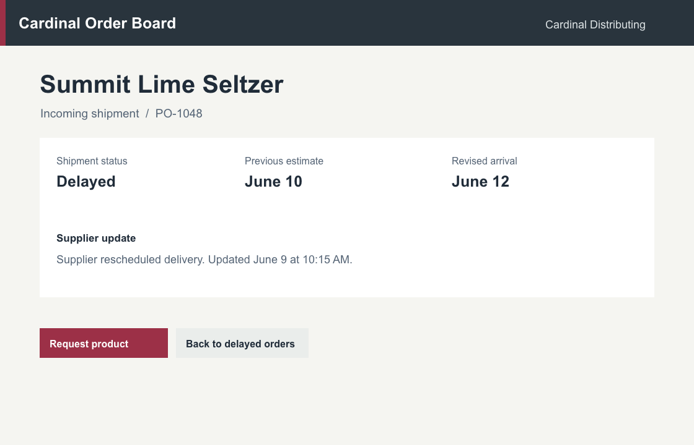
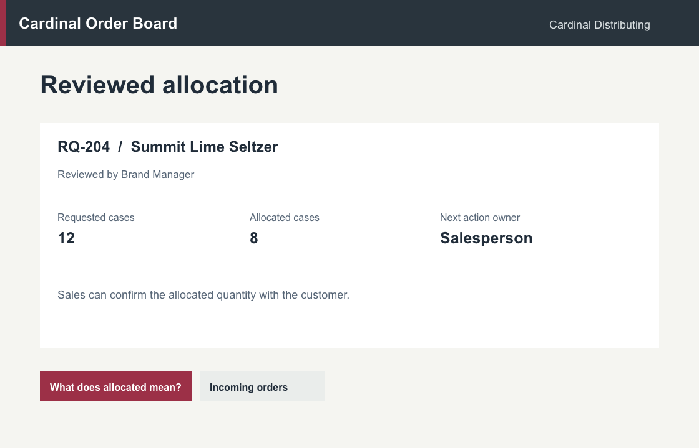
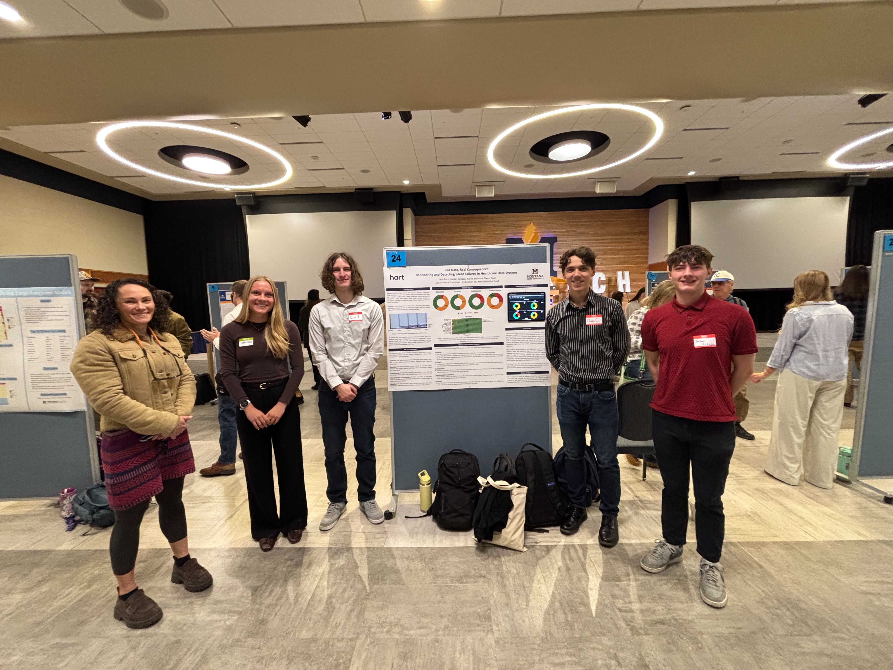

Projects
Three projects exploring how people check an order, drive a robot, and interpret a data pipeline run.
Cardinal Order Board




CSCI 443 UX design project. When a shipment slips, sales needs to know both the new arrival date and how much product it can promise. Interviews across five employee roles showed that a single order status could not answer both questions.
I used empathy maps and a composite persona to compare employee needs, then sketched the handoff from shipment lookup to allocation review. In Adobe XD, I carried the product into the request form so employees could correct a missing quantity without starting again.
In the prototype, sales requests 12 cases and receives 8. Showing both quantities beside the follow-up owner makes the next customer call clear. My next usability test would ask an employee how many cases they can confirm and when.
Browser-Controlled Robot with Dialog Engine
An operator needs to steer a moving robot from a browser while the robot responds to nearby obstacles. I connected a browser joystick to a Flask application running on a Raspberry Pi, then worked through how the robot should follow a wall. On the hardware, I debugged sensor placement, orientation, and which side of the robot tracked the wall. The video shows the resulting wall-following behavior.
ETL Metadata Validation Dashboard

Someone reviewing a pipeline run needs to tell what happened without interpreting every metadata record. I used PySpark and SQL in Databricks to validate the metadata and classify each run outcome, then organized those results into tables and views for dashboard reporting. Each displayed status draws on the same classification logic.
More projects
Robot Wall-Following and Sensor Integration
Implemented wall-following behavior using LIDAR data and debugged orientation, wall-side logic, and sensor-placement issues on real hardware.
2D Sandbox / RPG Game Engine Work
Developed Java game systems including movement, animation, collision, autotiling, map logic, follower entities, and item interactions.
Drink Sync
Built a CRUD web app for logging drinks, ratings, notes, and images using PHP, MariaDB, and a multi-page front end.